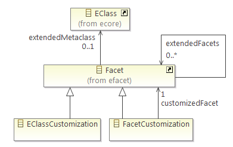
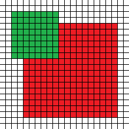
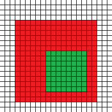

EMF Facet provides a customization component, that can be used to define the appearance of model elements when viewed in an editor or view that supports this customization mechanism.
A customization is defined in a model that conforms to the EMF Facet customization metamodel. This model is saved in a file with the ".custom" file extension.
A Customization is a FacetSet:
A Customization can contain customizations for Ecore metaclasses ( EClassCustomization), or Facets ( FacetCustomization). Both EClassCustomization and FacetCustomization are Facets.
The extendedMetaclass of an EClassCustomization is the EClass whose instances will be customized.
The extendedFacet of an EClassCustomization or FacetCustomization is the Facet that defines the customizable features (label, color, etc.) that will be customized.
In case of facet customization, the customizedFacet of a FacetCustomization is the Facet for which model elements that conform to this Facet will be customized.

Customizable features are defined in Facets as FacetOperations. For example, this FacetSet defines basic customizable features such as label, icon, etc.: platform:/plugin/org.eclipse.papyrus.emf.facet.custom.ui/resources/customproperties.efacet
The following instance diagram shows how a Facet named CustomizedEObject is defined in customproperties.efacet. Its extendedMetaclass is EObject, so it can be used to customize any model element. It contains FacetOperations (of which only two are represented here). These FacetOperations define the customizable features: here the label and image for a model element. The type of each of these FacetOperations is the customized feature's type : an EString for the label and an Image for the image.
The operation is called each time the value of its customization is needed. For example, when displaying a model element in a viewer, we will need its label. So the label operation will be called on the model element for which the label is needed.
A FacetOperation that defines a customizable feature such as label, icon, color, font, etc. can be compared to a virtual method: it is meant to be overridden in extending Facets in order to provide a specific customization.
To understand this override mechanism, remember that a EClassCustomization and FacetCustomization are Facets (the EClassCustomization and FacetCustomization metaclasses extend the Facet metaclass).
To create a customization for instances of an EClass:
In the following example, we customize the label of instances of the Writer metaclass from a library metamodel (defined in library.ecore). For this, we create an EClassCustomization which extends the CustomizedEObject Facet. This CustomizedEObject Facet provides the customizable feature label which we want to customize. So, we create a FacetOperation (in our EClassCustomization) which overrides the label FacetOperation (in CustomizedEObject). Finally, we choose to provide the label using a Java query, so we create a JavaQuery under our label FacetOperation's query reference. We set this JavaQuery's implementationClassName to the full qualified name of a Java class that implements the query and returns the label corresponding to a Writer instance passed as a source to this query.
To create a customization for model elements that conform to a Facet:
In the following example, we want to add an overlay icon on elements that conform to the UnproductiveWriter metaclass from the library FacetSet (defined in library.efacet). For this, we create an FacetCustomization which extends the UnproductiveWriter Facet. We create a FacetOperation (in our FacetCustomization) which overrides the bottomRightOverlay FacetOperation that allows adding an overlay icon in the bottom right corner of an element's main icon. Finally, we provide the overlay icon using a query. This query will be evaluated with instances of Writer that conform to the UnproductiveWriter Facet, and will return the overlay icon.
Each FacetOperation that defines a customizable feature has a parameter named eStructuralFeature. This parameter is useful for customizing the structural feature corresponding to a single model element. For example, in the following screenshot, a Library model element contains Writers through a structural feature named writers. If we want to customize this writers structural feature in the context of its parent Library, then we need both the Library model element and the writers feature. In this case, the FacetOperation would be called on the Library model element, and the value of the eStructuralFeature parameter would be the writers feature.
To specify that a customization should only be applied to elements that satisfy certain criteria, you have two choices:
To handle several cases in a customization (to return different values for a single customized feature depending on boolean conditions), you can implement the customized FacetOperation with an ETypedElementSwitchQuery. This type of query returns the value corresponding to the first of its cases that evaluates to true.
Since there is no dedicated UI tooling as yet for editing customizations, you will have to use either a generic model editor or write the XMI by hand for now. Here is an example of a customization model in the XMI format. This example defines a customization for the Writer metaclass, that customizes the label for Writer model elements. And a second customization that customizes the UnproductiveWriter Facet, to add an overlay to the icon of model elements that conform to the UnproductiveWriter Facet.
<custom:Customization
xmi:version="2.0"
xmlns:xmi="http://www.omg.org/XMI"
xmlns:xsi="http://www.w3.org/2001/XMLSchema-instance"
xmlns:custom="http://www.eclipse.org/papyrus/emf/facet/custom/0.2.incubation/custom"
xmlns:ecore="http://www.eclipse.org/emf/2002/Ecore"
xmlns:efacet="http://www.eclipse.org/papyrus/emf/facet/efacet/0.2.incubation/efacet"
xmlns:javaQuery2="http://www.eclipse.org/papyrus/emf/facet/query/java/0.2.incubation"
name="org.eclipse.papyrus.emf.facet.efacet.examples.library.core.custom">
<eClassifiers xsi:type="custom:EClassCustomization">
<extendedMetaclass href="http://www.eclipse.org/papyrus/emf/facet/examples/library/0.2.incubation/library#//Writer"/>
<extendedFacets href="platform:/plugin/org.eclipse.papyrus.emf.facet.custom.ui/resources/customproperties.efacet#//CustomizedEObject"/>
<facetOperations xsi:type="efacet:FacetOperation" name="label" lowerBound="1">
<eType xsi:type="ecore:EDataType" href="http://www.eclipse.org/emf/2002/Ecore#//EString"/>
<query xsi:type="javaQuery2:JavaQuery" implementationClassName="org.eclipse.papyrus.emf.facet.efacet.examples.library.core.internal.queries.WriterLabel"/>
<override xsi:type="efacet:FacetOperation" href="platform:/plugin/org.eclipse.papyrus.emf.facet.custom.ui/resources/customproperties.efacet#//CustomizedEObject/label"/>
<eParameters xsi:type="ecore:EParameter" name="eStructuralFeature">
<eType xsi:type="ecore:EDataType" href="http://www.eclipse.org/emf/2002/Ecore#//EStructuralFeature"/>
</eParameters>
</facetOperations>
</eClassifiers>
<eClassifiers xsi:type="custom:FacetCustomization">
<extendedFacets href="platform:/plugin/org.eclipse.papyrus.emf.facet.efacet.examples.library.core/library.efacet#//writer/UnproductiveWriter"/>
<facetOperations xsi:type="efacet:FacetOperation" name="bottomRightOverlay" lowerBound="1">
<eType xsi:type="ecore:EDataType" href="http://www.eclipse.org/papyrus/emf/facet/custom/0.2.incubation/custom_primitive_types#//Image"/>
<query xsi:type="javaQuery2:JavaQuery" implementationClassName="org.eclipse.papyrus.emf.facet.efacet.examples.library.core.internal.queries.UnproductiveWriterOverlay"/>
<override xsi:type="efacet:FacetOperation" href="platform:/plugin/org.eclipse.papyrus.emf.facet.custom.ui/resources/customproperties.efacet#//CustomizedEObject/bottomRightOverlay"/>
<eParameters xsi:type="ecore:EParameter" name="eStructuralFeature">
<eType xsi:type="ecore:EDataType" href="http://www.eclipse.org/emf/2002/Ecore#//EStructuralFeature"/>
</eParameters>
</facetOperations>
</eClassifiers>
</custom:Customization>
The text displayed for a model element can be customized with the label customization defined on CustomizedEObject.
The icon that appears before the text for a model element can be customized with the image customization defined on CustomizedEObject.
Both the text color ( foreground) and background color ( background) can be customized.
The following font-related properties are defined on CustomizedEObject and can be customized:
In addition to the main icon displayed for a model element, up to six additional overlay icons can be displayed in the corners of the main icon. The following image depicts the position of each overlay relative to the main icon:
|  |
|
|
| topLeftOverlay | topMiddleOverlay | topRightOverlay |
|  | ||
| bottomLeftOverlay | bottomMiddleOverlay | bottomRightOverlay |
Overlays should be defined on Facets (using a FacetCustomization). You will get a warning if you define an overlay on an EClass (with EClassCustomization). This warning may be disabled in the preferences, in section Model Validation > Constraints : check or uncheck EMF Facet Custom Model Validation > Avoid EClass Overlay.
The default customization properties defined in EMF Facet can be obtained from the following set of interfaces:
To make a customization available at runtime in the customization catalog, you must register it with extension point org.eclipse.papyrus.emf.facet.util.emf.core.modeldeclaration, like this:
<extension point="org.eclipse.papyrus.emf.facet.util.emf.core.modeldeclaration"> <modeldeclaration file="myCustomization.custom"/> </extension> Also, your ".custom" file must be included in your plug-in's build.properties in order to be available in deployed plug-ins.
Customizations that have been registered are available from the customization catalog. For example, if you want to retrieve the list of all registered customizations:
ICustomizationCatalogManager customCatalog = ICustomizationCatalogManagerFactory.DEFAULT
.getOrCreateCustomizationCatalogManager(new ResourceSetImpl());
List<Customization> allCustomizations = customCatalog.getRegisteredCustomizations();
Then you can for example look for a customization with a given name in the previous list:
Customization myCustom = CustomizationUtils.getCustomization(allCustomizations, "MyCustomization");
The customization manager is used to manipulate customizations. To obtain an instance of the CustomizationManager, you must ask the customization manager factory:
ICustomizationManager customManager = ICustomizationManagerFactory.DEFAULT.getOrCreateICustomizationManager(resourceSet);
The resourceSet parameter must be the same ResourceSet that was used to instantiate a customization catalog manager in ICustomizationCatalogManagerFactory#getOrCreateCustomizationCatalogManager.
The customization manager provides these important methods:
customManager.getManagedCustomizations().add(custom);Boolean result = customManager.getCustomValueOf(eObject, aBooleanProperty, Boolean.class);You don't always have to interact with the customization manager directly though: when you want to evaluate a standard customization property (label, image, visibility, etc.), you can use a customized label or content provider supplied by EMF Facet:
Copyright © 2012 Mia-Software. All rights reserved. This program and the accompanying materials are made available under the terms of the Eclipse Public License v1.0 which accompanies this distribution, and is available at http://www.eclipse.org/legal/epl-v10.html. Contributors: Nicolas Bros (Mia-Software) ; Laurent Pichierri (Soft-Maint) - Bug 375789 - Documentation